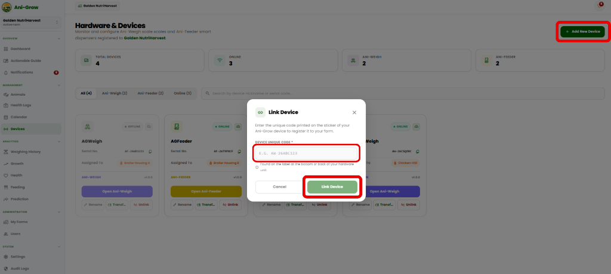
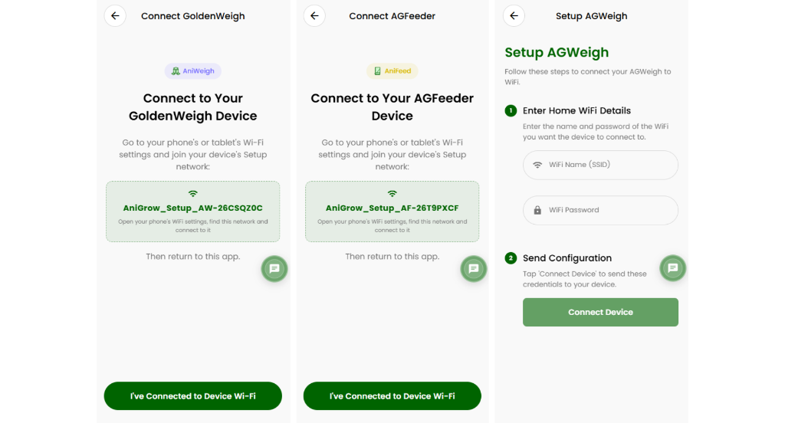
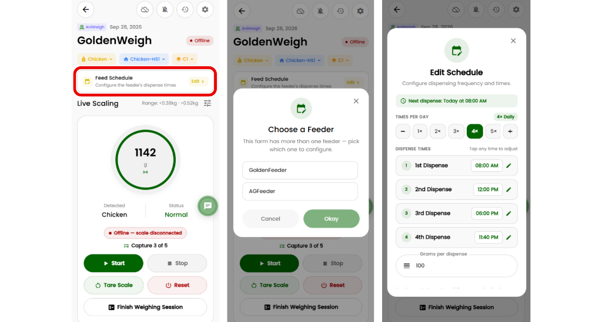

Registering physical Ani-Grow poultry and livestock equipment to your online farm account using the Web Portal.
Before installing your AniFeed (automated feed dispenser) or AniWeigh (smart weighing scale) in your poultry coops or livestock pens, each device must be registered in your online farm account.
1.1 Finding Your Device Registration Code
Every physical Ani-Grow device features an official factory sticker on its enclosure or packaging. Look for the unique code printed on the sticker:
Equipment Type
Sample Sticker Code
Device Function Description
AniFeed Unit
AF-8842-P1
Automated feeding dispenser for poultry & livestock
AniWeigh Scale
AW-3321-S4
Smart weighing platform scale for poultry & livestock
Table 1.1 — Hardware equipment identification formats for poultry and livestock.
Note: Write down your device code. You will need this code whenever managing hardware settings or transferring equipment across coops or pens.
1.2 Registering Equipment in the Web Portal
1
Open the Devices Screen
Log into your Ani-Grow Web Portal on your desktop computer. Click Devices from the main left navigation bar.
2
Click "Link Hardware"
Click the green + Link Hardware button located at the top right of the screen.
3
Enter Device Sticker Code
Type the registration code found on your hardware sticker (e.g. AF-8842-P1) into the prompt field.
4
Confirm & Save Link
Click Link Device. The system verifies the code and binds the hardware to your farm account.

Figure 1.1 — Registering device code in the Web Farm Admin portal.
Ani-Grow™ User Manual — Section 2.0
Document Ref: DOC-AG-MAN-2026
2.0 Wi-Fi Setup & Network Connection
Connecting physical poultry and livestock hardware to your farm Wi-Fi using the Mobile App.
After registering your device code in the Web Portal, you must connect the device to your local farm Wi-Fi network so it can operate online. Setup is performed using the Ani-Grow Mobile App.
Pre-Setup Checklist (Required):
Turn ON the physical device power switch.
Turn OFF Mobile Cellular Data on your phone (Prevents phone from dropping the setup network).
Turn OFF any active VPN apps on your smartphone.
2.1 Mobile App Connection Workflow
1
Open Mobile App & Go to Devices
Launch the Ani-Grow Mobile App on your smartphone and tap Devices on the bottom menu.
2
Start Setup
Tap the + Add Device button, or tap the offline Wi-Fi icon next to your device name.
3
Connect Phone to Device Setup Wi-Fi
Open your mobile phone's Wi-Fi settings. Select the temporary network broadcasted by your device:
Setup Network Name:AniGrow_Setup_AF8842P1
Tap to connect (No password required).
4
Enter Farm Wi-Fi Credentials
Return to the Ani-Grow Mobile App. Enter your local farm Wi-Fi Network Name (SSID) and Password, then tap Send Wi-Fi Config.
5
Reconnect Phone & Name Equipment
Switch your smartphone's Wi-Fi back to your regular farm Internet Wi-Fi. Return to the app, enter a nickname (e.g., "Poultry Coop 1 Feeder" or "Pig Pen 1 Scale"), and tap Finish.

Figure 2.1 — Wi-Fi hotspot connection and credentials setup in the Ani-Grow Mobile App.
Ani-Grow™ User Manual — Section 3.0
Document Ref: DOC-AG-MAN-2026
3.0 Automated Feed Scheduling for Poultry & Livestock (AniFeed)
Configuring feeding times, portion amounts, and coop or pen assignments for poultry and livestock.
The AniFeed system allows you to schedule exact feeding times and portion sizes (in grams) for each poultry coop or livestock pen. Feed is dispensed automatically according to your saved schedule.
3.1 Configuring a Feed Schedule
1
Open Feed Schedule Manager
From the Web Portal or Mobile App, navigate to Devices, select your AniFeed unit, and click Feed Schedule.
2
Assign Housing (Coop / Pen)
Select which housing unit (e.g. Chicken-HS1 or Pig Pen 1) is connected to this feeder.
3
Set Daily Frequency & Portion Grams
Choose how many times feed should be served per day (1 to 12 times) and specify the amount per dispense in grams (g).
4
Set Feeding Hours & Save
Specify the exact dispense hours (e.g., 08:00 AM, 12:00 PM, 06:00 PM) and click Save Schedule.

Figure 3.1 — Feed schedule selection and portion configuration in the Ani-Grow Mobile App.